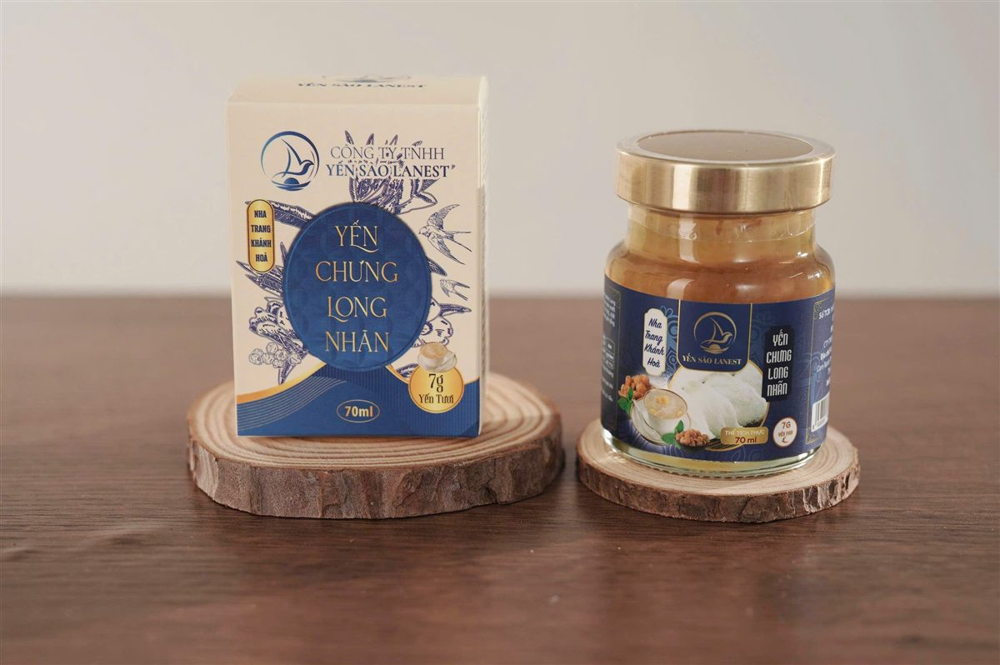
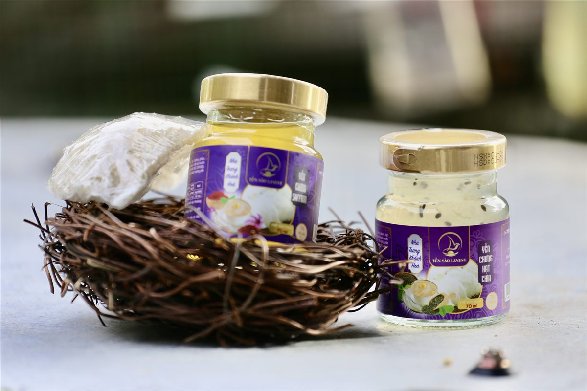

Yến Chưng Cho Dân Văn Phòng: Bữa Phụ Tiện Lợi Cho Ngày Bận Rộn
Yến Sào Lanest · Đăng ngày 19/10/2026

Sáng chạy deadline, trưa ăn vội, tối về còn việc nhà. Với nhịp đó, chuyện ngâm yến, nhặt yến, canh nồi chưng cách thủy gần như không có chỗ trong lịch. Bài này dành cho anh chị muốn dùng yến chưng cho dân văn phòng theo cách gọn nhất: chọn dòng hũ nào, vị nào, uống lúc nào và cất ở văn phòng ra sao để hũ yến luôn ngon.
Một hũ 70ml kèm hộp nhỏ, đặt gọn trên bàn làm việc
1. Vì sao yến hũ hợp với nhịp văn phòng
Tự chưng yến không khó, nhưng tốn thời gian: theo cẩm nang của Lanest, yến cần ngâm khoảng 15–30 phút rồi chưng cách thủy thêm 15–20 phút, nước không được sôi mạnh. Cộng cả khâu chuẩn bị và rửa chén thì gần một buổi tối.
Yến chưng sẵn thì khác. Yến đã được chưng, đóng hũ thủy tinh 70ml và tiệt trùng, mở nắp là dùng được. Trong bảng phân loại yến của Lanest, yến chưng sẵn được ghi đúng hai chữ: "dùng ngay, dễ uống". Với người cả ngày ngồi trước máy tính, đó là ưu điểm lớn nhất.
Chị Lê, người sáng lập Lanest, từng kể lý do chị dồn hết sức cho nghề yến từ sau dịch Covid. Chị nhận ra người ta thường đợi tới lúc bệnh mới lo sức khỏe:
"ờ sao người ta khi mà khỏe mạnh á mình không có chăm lo sức khỏe đi để đến khi mà mình bệnh rồi á thì mình mới không có đủ cái sức khỏe chống dòi lại"
Dân văn phòng phần lớn đang khỏe, chỉ là bận. Một hũ yến tiện tay là cách chăm mình không tốn thêm thời gian.
2. Hai dòng yến hũ: chọn dòng nào?
Lanest có hai dòng yến hũ chưng sẵn, cùng hũ thủy tinh 70ml nhưng khác lượng yến và cách dùng:
| Yến hũ 7g yến tươi | Tổ yến chưng nguyên chất 100% | |
| Lượng yến mỗi hũ | 7g yến tươi | 1,5g tổ yến, tương đương 15g yến tươi |
| Số vị | 14 vị | 3 vị: đường phèn, đông trùng hạ thảo, gừng |
| Thành phần | Yến tươi, đường phèn hoặc đường ăn kiêng, nguyên liệu theo vị, có chất ổn định và hương yến tổng hợp | Nước tinh khiết, tổ yến, đường phèn và nguyên liệu theo vị; không chất phụ gia |
| Cách dùng | Dùng ngay hoặc chưng cách thủy | Dùng ngay, ngon hơn khi uống lạnh |
Nói gọn: muốn đổi vị mỗi ngày cho đỡ ngán thì chọn dòng 7g. Muốn một hũ đậm yến hơn, lượng yến gấp hơn hai lần, thì chọn dòng nguyên chất.
3. Chọn vị theo thói quen làm việc
Tài liệu mô tả sản phẩm của Lanest có ghi từng vị phù hợp với ai. Vài vị hay được dân văn phòng chọn:
| Vị | Tài liệu sản phẩm ghi phù hợp với |
| Nhân sâm | Người làm việc trí óc, doanh nhân |
| Long nhãn | Người làm việc căng thẳng, phụ nữ |
| Gừng | Người hay lạnh bụng, người làm việc khuya |
| Hạt chia | Người ăn kiêng, người quan tâm vóc dáng |
| Saffron | Phụ nữ, người chăm sóc sắc đẹp |
| Đường ăn kiêng | Người đang hạn chế đường |
Yến chưng là thực phẩm, không phải thuốc và không thay thế thuốc chữa bệnh. Anh chị đang điều trị bệnh hoặc phải kiểm soát đường huyết thì nên hỏi bác sĩ trước khi dùng thường xuyên.

Hũ yến chưng saffron và hạt chia, hai vị nhiều chị em văn phòng hay chọn
4. Uống lúc nào, bao nhiêu là hợp?
Cẩm nang dùng yến của Lanest gợi ý hai khung giờ: sáng sớm trước khi ăn hoặc buổi tối trước khi ngủ (các tài liệu ghi khoảng 30 phút đến 1 tiếng trước giờ ngủ). Áp vào lịch văn phòng:
- Đến công ty sớm, chưa kịp ăn sáng: một hũ yến đầu giờ là vừa.
- Không uống ngay sau bữa trưa no. Cẩm nang ghi rõ không nên ăn yến ngay sau bữa chính.
- Nếu cả ngày bận, để dành hũ mang về uống buổi tối, lúc bụng đã nhẹ.
Về tần suất, tài liệu của Lanest gợi ý người trưởng thành dùng yến đều đặn khoảng 2–3 lần mỗi tuần. Điều quan trọng là đều, không phải nhiều: kiên trì dùng đều tốt hơn uống dồn vài hũ một lúc rồi bỏ ngang. Một hũ yến cũng chỉ là bữa phụ, không thay được bữa ăn chính.
5. Cất yến ở văn phòng sao cho đúng
Mang yến lên văn phòng thì cần để ý chỗ cất, vì yến sợ ẩm, nắng và nhiệt độ cao.
- Hũ chưa mở: để nơi khô ráo, thoáng mát, tránh nắng trực tiếp. Tránh bậu cửa sổ, chỗ gần máy pha cà phê hay ấm siêu tốc, và đừng để hũ cả ngày trong xe nắng.
- Hũ đã mở: phải bảo quản lạnh. Mở rồi chưa uống hết thì đậy nắp, cho vào tủ lạnh văn phòng.
- Dòng nguyên chất: ngon hơn khi uống lạnh, nên có thể để sẵn vài hũ trong ngăn mát. Riêng vị gừng, lắc nhẹ trước khi uống.
- Luôn xem hạn sử dụng in trên hũ.
Chi tiết cho từng dạng yến có trong bài cách bảo quản tổ yến khô và yến đã chưng.
6. Thích tự chưng vào cuối tuần?
Nhiều anh chị vẫn thích tự chưng cho chủ động độ ngọt. Khi đó có thể dùng yến tinh chế (đã làm sạch lông), Lanest đóng hộp 50g và 100g. Một lưu ý: yến tự chưng để ngăn mát chỉ nên dùng trong 1–2 ngày, nên đừng chưng một nồi cho cả tuần. Cách làm từng bước xem ở bài hướng dẫn chưng yến đúng cách.
Còn nếu muốn đặt yến hũ cho cả phòng hoặc làm quà cho đồng nghiệp, Lanest có các combo theo số lượng hũ, anh chị gọi hotline để được tư vấn.
Câu hỏi thường gặp
Yến hũ uống lạnh được không?
Được. Dòng tổ yến chưng nguyên chất 100% còn ghi rõ là ngon hơn khi uống lạnh. Dòng 7g yến tươi dùng ngay được, nếu thích ấm thì chưng cách thủy lại.
Hũ yến đã mở để trên bàn làm việc đến chiều được không?
Không nên. Hũ đã mở nắp phải bảo quản lạnh. Mở ra là nên uống hết, chưa hết thì đậy nắp cho vào tủ lạnh.
Ngày nào cũng uống một hũ có sao không?
Cẩm nang của Lanest gợi ý người trưởng thành dùng yến vài lần mỗi tuần, đều đặn. Nếu đang điều trị bệnh hoặc phải kiêng đường, anh chị hỏi bác sĩ trước.